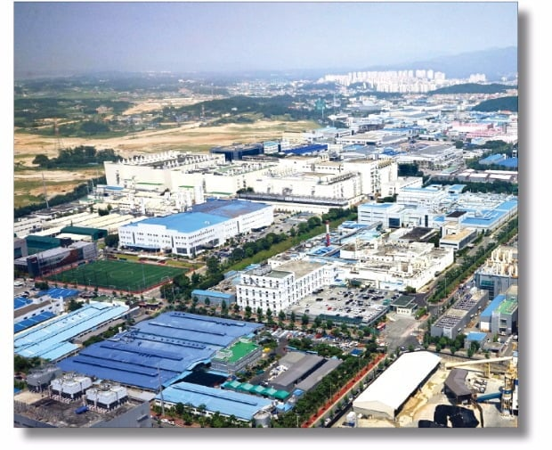
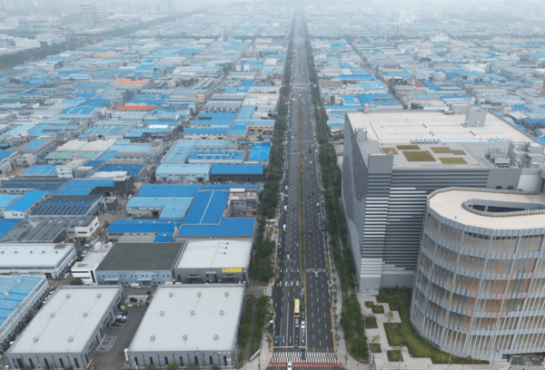
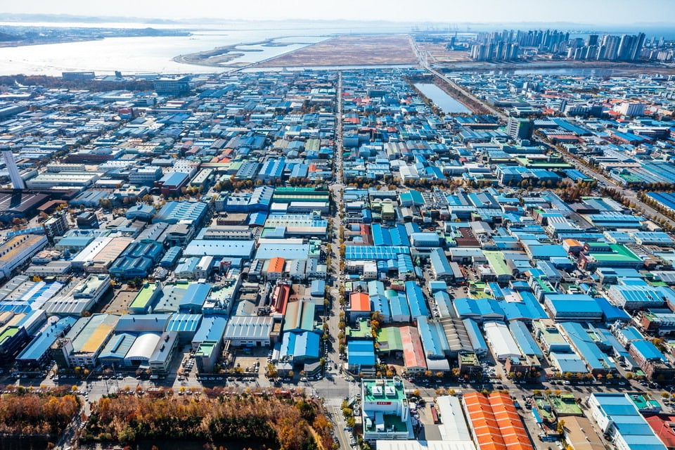
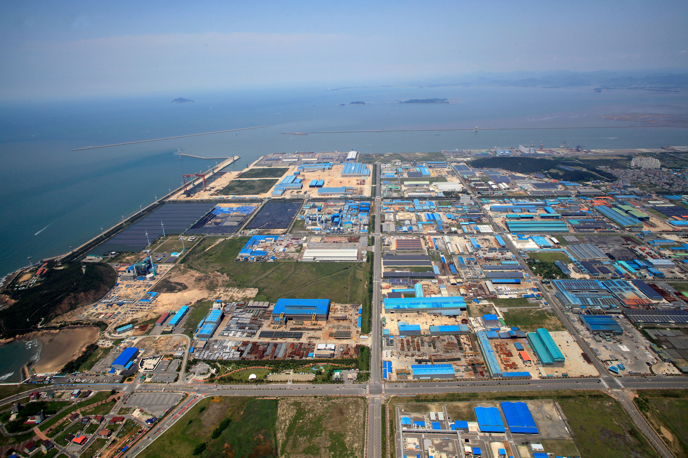
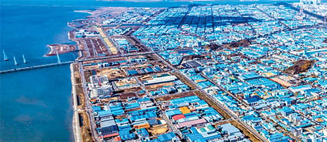
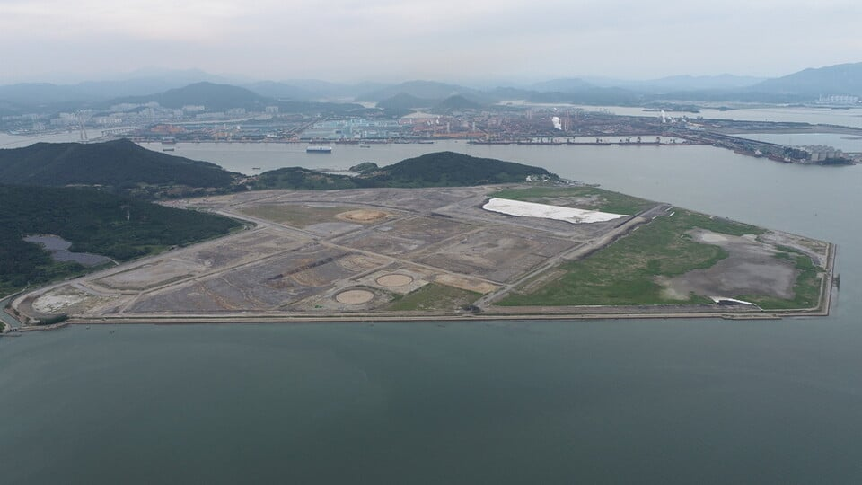
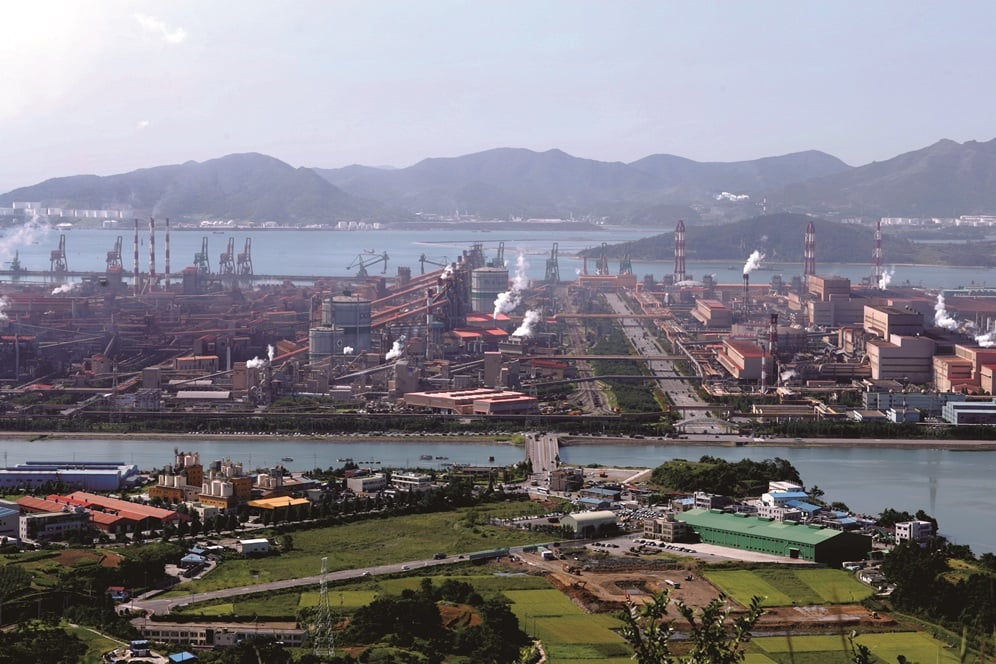
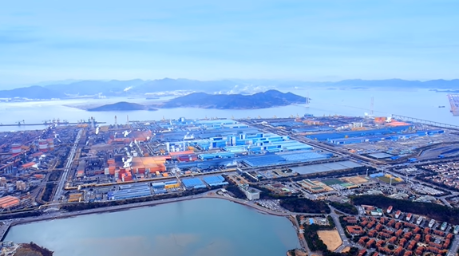
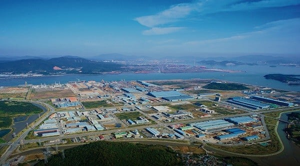

그냥 지방자체가 이런 산단 수용소가 차고남쳐서 쑤셔박을데가 남아돌음
애초에 집앞에 지을곳보다 이런곳에 짓는게 더 유리함.









그냥 지방자체가 이런 산단 수용소가 차고남쳐서 쑤셔박을데가 남아돌음
애초에 집앞에 지을곳보다 이런곳에 짓는게 더 유리함.
데센 + 태양광 오케이
하긴...
우리나라는 택지허가 내기가
공단 허가 내기 보다 훨씬 어려운데
어렵게 택지 허가 받아낸 금싸라기 땅에
아파트 지어야지
데이타 센터지 지을 필요가 없지
근데 데이터센터부지하나면 저기 소규모 공단보다 전력소모 클거같음
반도체공단 한달 전기 이용량이 소도시 1년 전기이용량 이라던데
도시도 가정용만치면 사실 얼마 안됨
서울전체 가정용다합쳐봐야 삼전 반도체사업부 반밖에 안씀
ㄹㅇ 뭐하러 주택옆에 짓냐고 산단 존나 많은데 ㅋㅋㅋㅋ
거기다 저기가 물이나 전기 끌어오기 이미 준비됨
대한의 미래는 지구의 데센이다. 전국토의 데센화
미국은 공단 없음? ㅎㄷㄷ
지으려는 데센 규모가 산단수준이라 빈땅에 인프라 박는것부터 시작해야됨
근데 그 돈이 아까우니까 주택가 기어들어가서 인프라 훔쳐쓰는거
ㄹㅇ 산단 빈땅 많은데 거따 박지
미국은 빈 땅이 없어서 반대할까?

우리보다 땅 몇십배가 넓은 미국도 비용 쌀먹하려고 주택가에 쳐짓던대
우리나라 기업새끼들이라고 다를까?
우리나라는 부동산에 미쳐있는 나라라서
그딴 짓거리는 절대 불가능함 ㅋㅋ
우리나라는 주택가쪽이 훨씬 비싸서...
우리나라는 국토 면적대비 해안선이 긴 편이, 존나게 큰 강점임